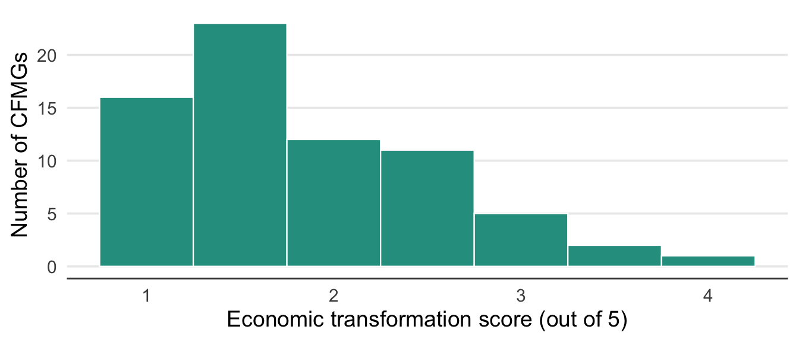
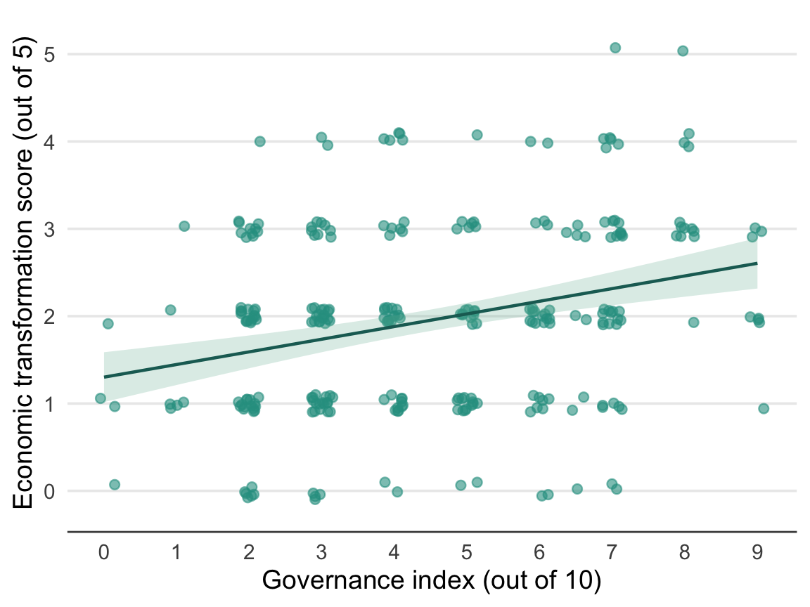

Economic Transformation
Summary
Most FGD groups reported that CFM had not improved access to natural resources for either household use or sale, though approximately one third indicated that access had increased. Approximately half of FGD groups agreed that CFM had generated new employment opportunities, with a marked contrast between community youth (who were most likely to agree) and community female FGDs (who were most likely to disagree). Employment was strongly male-biased and the dominant employment category was HFO or Community Scout. Income earning opportunities from CFM remain limited for most communities. Awareness of carbon credit agreements was generally high. However, although around 80% of CFMGs are involved in generating carbon credits, only around one third had received carbon payments. Carbon enterprise investment was primarily directed at improved forest management and agricultural extension, rather than at developing forest product value chains. However, forest product value chains — particularly honey and mushrooms — dominated both realised and aspirational income sources among CF communities. Most forest products are sold only at local markets. Partnerships with private enterprises were uncommon and mostly involved honey off-takers. Communities identified timber as the most important unrealised commercial opportunity, despite none of the surveyed CFMGs being involved in timber production. Opportunity costs of CFM were recognised by only about one third of FGD groups. Unexpectedly, non-timber forest product (NTFP) harvesting was frequently cited as a precluded activity, suggesting possible misunderstandings around forest use rules in many communities. It is evident from the survey that most CFMG business plans are overly reliant on carbon and potentially valuable NTFP value chains remain under-exploited. Furthermore, the governance index was a significant predictor of economic performance, at least from the perspective of the community FGD groups, which again underscores the importance of ensuring quality governance if the benefits of CFM are to be realised.
Introduction
In this chapter, we consider the effect of CFM management on indicators of economic transformation.
Access to natural resources
We asked FGD groups whether CFM had improved access to natural resources for household use (Figure 1).
Most FGD groups reported no increase in access to natural resources for household use, though approximately one third indicated that access had improved under CFM. Community youth were significantly more likely to report no improvement compared to CFMG executive FGDs, but none of the other pairwise comparisons were significant. Most natural resources are currently accessed for household use and results were similar for those that are collected for sale.
| Model results for improved access to natural resources for household use — FGD type and governance index | |||
| Estimates are log-odds; reference = Executive FGD. Province variance = 0.117; CF-within-province variance = 0.327. Marginal R² = 0.087; conditional R² = 0.196. n = 273. | |||
| Factor | Estimate | SE | P value |
|---|---|---|---|
| Intercept (Executive FGD) | −1.060 | 0.461 | 0.0214 |
| Female FGD | −0.433 | 0.370 | 0.2429 |
| Male FGD | −0.471 | 0.379 | 0.2138 |
| Youth FGD | −1.379 | 0.430 | 0.0013 |
| Governance index | 0.145 | 0.078 | 0.0633 |
| Pairwise comparisons — FGD type | ||||
| Estimates are log-odds differences on the emmeans scale. Tukey-adjusted p-values. | ||||
| Contrast | Estimate | SE | z ratio | P value |
|---|---|---|---|---|
| Executive - Female | 0.433 | 0.370 | 1.168 | 0.6472 |
| Executive - Male | 0.471 | 0.379 | 1.243 | 0.5993 |
| Executive - Youth | 1.379 | 0.430 | 3.209 | 0.0073 |
| Female - Male | 0.039 | 0.394 | 0.098 | 0.9997 |
| Female - Youth | 0.946 | 0.439 | 2.156 | 0.1359 |
| Male - Youth | 0.908 | 0.446 | 2.033 | 0.1757 |
Individual interviewees were also asked whether CFM had improved access to natural resources for household use (Table 3). Similar to the FGD results, a majority of respondents indicated that they did not think that CFM had improved access to natural resources for household use. However, DFOs were significantly more likely to suggest that CFM had improved access than CFMG executives or traditional leaders. None of the other pairwise comparisons were significant.
| Improved access to natural resources for household use as reported by individual interviewees | ||
| Values represent the % of responses agreeing that CFM has improved access to resources for household use. n = the total number of interview responses. | ||
| Role | n | Household use |
|---|---|---|
| Community member | 31 | 45% |
| CFMG executive member | 63 | 24% |
| Traditional leader | 75 | 27% |
| District Forestry Officer | 56 | 62% |
| Private enterprise rep | 32 | 50% |
| Model results for improved access to natural resources for household use — individual interviewees | |||
| Estimates are log-odds; reference = Community member. Province variance = 0.129; CF-within-province variance = 0.149. Marginal R² = 0.122; conditional R² = 0.19. n = 257. | |||
| Factor | Estimate | SE | P value |
|---|---|---|---|
| Intercept (Community member) | 0.235 | 0.810 | 0.7718 |
| CFMG executive member | −1.023 | 0.527 | 0.0520 |
| Traditional leader | −0.823 | 0.490 | 0.0934 |
| District Forestry Officer | 0.695 | 0.502 | 0.1664 |
| Private enterprise rep | 0.098 | 0.555 | 0.8599 |
| Male | −0.317 | 0.372 | 0.3943 |
| Age | −0.002 | 0.013 | 0.8479 |
| Pairwise comparisons — interviewee role | ||||
| Estimates are log-odds differences on the emmeans scale. Tukey-adjusted p-values. | ||||
| Contrast | Estimate | SE | z ratio | P value |
|---|---|---|---|---|
| cfmg_member - cfmg_exec_member | 1.023 | 0.527 | 1.943 | 0.2946 |
| cfmg_member - trad_leader | 0.823 | 0.490 | 1.678 | 0.4477 |
| cfmg_member - dfo | −0.695 | 0.502 | −1.384 | 0.6380 |
| cfmg_member - NGO_rep | −0.098 | 0.555 | −0.177 | 0.9998 |
| cfmg_exec_member - trad_leader | −0.200 | 0.460 | −0.435 | 0.9926 |
| cfmg_exec_member - dfo | −1.718 | 0.474 | −3.628 | 0.0027 |
| cfmg_exec_member - NGO_rep | −1.121 | 0.515 | −2.175 | 0.1892 |
| trad_leader - dfo | −1.518 | 0.453 | −3.347 | 0.0073 |
| trad_leader - NGO_rep | −0.921 | 0.515 | −1.788 | 0.3807 |
| dfo - NGO_rep | 0.597 | 0.480 | 1.245 | 0.7250 |
Employment
We asked FGD groups whether CFM had generated employment opportunities (Figure 2).

As can be seen from the figure, approximately half of the FGD groups agreed that CFM had increased employment opportunities. Interestingly, community youth were especially likely to agreed that CFM had created employment opportunities. In contrast, community female FGD groups were much more likely to say that CFM had not increased employment opportunities. All pairwise comparisons were highly significant.
| Model results for employment opportunities generated by CFM — FGD type and governance index | |||
| Estimates are log-odds; reference = Executive FGD. Province variance = 0.893; CF-within-province variance = 0. Marginal R² = 0.287; conditional R² = 0.439. n = 272. | |||
| Factor | Estimate | SE | P value |
|---|---|---|---|
| Intercept (Executive FGD) | −1.617 | 0.566 | 0.0043 |
| Female FGD | −1.459 | 0.419 | 0.0005 |
| Male FGD | −0.384 | 0.400 | 0.3373 |
| Youth FGD | 1.124 | 0.427 | 0.0085 |
| Governance index | 0.434 | 0.082 | 0.0000 |
| Pairwise comparisons — FGD type | ||||
| Estimates are log-odds differences on the emmeans scale. Tukey-adjusted p-values. | ||||
| Contrast | Estimate | SE | z ratio | P value |
|---|---|---|---|---|
| Executive - Female | 1.459 | 0.419 | 3.484 | 0.0028 |
| Executive - Male | 0.384 | 0.400 | 0.959 | 0.7725 |
| Executive - Youth | −1.124 | 0.427 | −2.633 | 0.0421 |
| Female - Male | −1.076 | 0.429 | −2.508 | 0.0587 |
| Female - Youth | −2.583 | 0.473 | −5.457 | 0.0000 |
| Male - Youth | −1.508 | 0.445 | −3.387 | 0.0039 |
Individual interviewees were also asked whether CFM had generated employment opportunities (Table 8). Interestingly, community respondents were much more likely to agree that CFM had created employment opportunities than private enterprise representatives or DFOs. The differences between DFOs and CFMG executives and traditional leaders were significant, but none of the other pairwise comparisons were significant.
| Employment opportunities reported by individual interviewees | ||
| Values represent the % of responses agreeing that CFM has generated employment opportunities. n = the total number of interview responses. | ||
| Role | n | Agree CFM has generated employment opportunities |
|---|---|---|
| Community member | 31 | 60% |
| CFMG executive member | 63 | 75% |
| Traditional leader | 75 | 53% |
| District Forestry Officer | 56 | 38% |
| Private enterprise rep | 32 | 48% |
| Model results for employment opportunities generated by CFM — individual interviewees | |||
| Estimates are log-odds; reference = Community member. Province variance = 0.315; CF-within-province variance = 0.195. Marginal R² = 0.116; conditional R² = 0.235. n = 250. | |||
| Factor | Estimate | SE | P value |
|---|---|---|---|
| Intercept (Community member) | 2.211 | 0.922 | 0.0165 |
| CFMG executive member | 0.331 | 0.564 | 0.5572 |
| Traditional leader | −0.088 | 0.531 | 0.8683 |
| District Forestry Officer | −1.448 | 0.580 | 0.0125 |
| Private enterprise rep | −0.975 | 0.634 | 0.1242 |
| Male | 0.436 | 0.380 | 0.2511 |
| Age | −0.041 | 0.014 | 0.0031 |
| Pairwise comparisons — interviewee role | ||||
| Estimates are log-odds differences on the emmeans scale. Tukey-adjusted p-values. | ||||
| Contrast | Estimate | SE | z ratio | P value |
|---|---|---|---|---|
| cfmg_member - cfmg_exec_member | −0.331 | 0.564 | −0.587 | 0.9770 |
| cfmg_member - trad_leader | 0.088 | 0.531 | 0.166 | 0.9998 |
| cfmg_member - dfo | 1.448 | 0.580 | 2.498 | 0.0909 |
| cfmg_member - NGO_rep | 0.975 | 0.634 | 1.537 | 0.5381 |
| cfmg_exec_member - trad_leader | 0.419 | 0.463 | 0.904 | 0.8953 |
| cfmg_exec_member - dfo | 1.779 | 0.484 | 3.677 | 0.0022 |
| cfmg_exec_member - NGO_rep | 1.306 | 0.552 | 2.366 | 0.1248 |
| trad_leader - dfo | 1.360 | 0.471 | 2.890 | 0.0315 |
| trad_leader - NGO_rep | 0.887 | 0.543 | 1.632 | 0.4767 |
| dfo - NGO_rep | −0.473 | 0.502 | −0.942 | 0.8806 |
Full-time employment by gender, age group and province
CFMG Executive FGDs reported on the number of males, females, and youth in full-time employment in the CFMG (Figure 3). Clearly, there are many more men in full-time employment than women. According to the responses across the 75 CFMGs surveyed, 278 men were employed compared to 56 women, and 207 male youths compared to 48 female youths.

Types of formal employment opportunities
Community female, male, and youth FGDs identified the types of formal employment opportunities generated by CFM (Figure 4). Clearly, by far the largest type of job created is HFO or Community Scout.

Income earning opportunities
Carbon finance
We asked the CFMG executive FGDs whether their CFMG had received income from carbon finance (Figure 5). According to the responses, around one third of CFs have received carbon payments. This is an under-representation for the number of CFMGs involved in carbon finance, which is around 80% of CFMGs, and reflects only those that have actually started to receive payments.

FGD groups were also asked whether the community was aware of the carbon credit agreement (Figure 6). While most CFMG executive groups stated that the community was aware of the carbon finance agreement, interestingly two stated that they were not. Most community female and male groups indicated they were aware of the carbon finance agreement, but more than half of the community youth groups stated they were not aware of the carbon finance agreement. Community youth were significantly less likely to know about the carbon finance agreement than CFMG Executives, but other pairwise comparisons were not significant.

| Model results for community awareness of carbon credit agreement — FGD type and governance index | |||
| Estimates are log-odds; reference = Executive FGD. Province variance = 0; CF-within-province variance = 0. Marginal R² = 0.987; conditional R² = NA. n = 70. | |||
| Factor | Estimate | SE | P value |
|---|---|---|---|
| Intercept (Executive FGD) | 3.499 | 1.214 | 0.0039 |
| Female FGD | −1.681 | 1.127 | 0.1359 |
| Male FGD | 33.852 | 14,779,767.795 | 1.0000 |
| Youth FGD | −2.659 | 0.907 | 0.0034 |
| Governance index | −0.189 | 0.184 | 0.3051 |
| Pairwise comparisons — FGD type | ||||
| Estimates are log-odds differences on the emmeans scale. Tukey-adjusted p-values. | ||||
| Contrast | Estimate | SE | z ratio | P value |
|---|---|---|---|---|
| Executive - Female | 1.681 | 1.127 | 1.491 | 0.4428 |
| Executive - Male | −33.852 | 14,779,767.795 | 0.000 | 1.0000 |
| Executive - Youth | 2.659 | 0.907 | 2.932 | 0.0177 |
| Female - Male | −35.533 | 14,779,767.795 | 0.000 | 1.0000 |
| Female - Youth | 0.979 | 1.002 | 0.976 | 0.7629 |
| Male - Youth | 36.511 | 14,779,767.795 | 0.000 | 1.0000 |
Individual interviewees were also asked whether the community was aware of the carbon credit agreement (Table 13). Most respondents indicated that the community was aware, but the percentage of positive responses varied across interviewee roles. Interestingly, private enterprise representatives overwhelmingly (~95%) suggested the community was informed, but the only 70% of DFOs thought the communities were informed, although the difference was not significant.
| Community awareness of the carbon credit agreement, as reported by individual interviewees | ||
| Values represent the % of positive responses. n = the total number of interview responses. | ||
| Role | n | Aware of carbon credit agreement |
|---|---|---|
| Community member | 31 | 83% |
| CFMG executive member | 63 | 87% |
| Traditional leader | 75 | 80% |
| District Forestry Officer | 56 | 70% |
| Private enterprise rep | 32 | 95% |
| Model results for community awareness of carbon credit agreement — individual interviewees | |||
| Estimates are log-odds; reference = Community member. Province variance = 0; CF-within-province variance = 0. Marginal R² = 0.94; conditional R² = NA. n = 97. | |||
| Factor | Estimate | SE | P value |
|---|---|---|---|
| Intercept (Community member) | 19.333 | 6,639.257 | 0.9977 |
| CFMG executive member | 0.305 | 0.981 | 0.7554 |
| Traditional leader | −0.038 | 1.070 | 0.9716 |
| District Forestry Officer | −0.456 | 0.985 | 0.6435 |
| Private enterprise rep | 1.645 | 1.336 | 0.2183 |
| Male | −19.029 | 6,639.257 | 0.9977 |
| Age | 0.020 | 0.029 | 0.4943 |
Carbon enterprise support
The types of CFM activities supported by carbon enterprises are shown in Figure 7. As can be seen, support focused on aspects of forest management or agricultural extension. Other potential elements of support, such as NTFPs value chains, infrastructure development or market access, featured substantially less.

Other income earning opportunities
FGD groups also reported whether CFM had generated income earning opportunities through specific interventions, including market linkages, alternative livelihood interventions, conservation revenue, forest product processing and ecotourism (Figure 8). Although some community FGDs indicated improvement in income earning opportunities under some categories, especially conservation revenue and forest product processing, most indicated that CFM had not generated income earning opportunities in these areas.

However, the community groups did identified other additional sources of income generated by CFM (Figure 9). Natural resource based value chains featured prominently among these, but interestingly community business was also mentioned.

To better understand the importance of different income earning opportunities we asked the community female, male, and youth FGD groups to rank their top three additional sources of income from CFM (Figure 10). Interestingly, among the 14 value chains identified, 12 were mentioned as 1st rank at least once. This immediately points to the diversity of forest products being harvested from CFs across the country, but also to the fact that for most CFs only one product features strongly as an addition source of income. Among these, mushrooms and honey are clearly the most frequently mentioned.

Female, male, and youth FGDs also reported which forest products were harvested for household use (Figure 11). Mushrooms again featured prominently, but other natural resources are also clearly important, such as wild fruits, medicinal plants, thatching grass and caterpillars.

CFMG executive FGDs were asked whether the CFMG was collaborating with any private enterprises (Figure 12). The answers indicate that only a small number of CFMGs were collaborating with a private enterprise.

The value chains that CFMGs reported working with through private enterprise partnerships are shown in Figure 13. Sixteen out of 17 involved partnerships with honey off-takers and just one involved mushrooms.

We asked the community female, male, and youth FGD groups to identify economic opportunities that remained unrealised within their CFs (Figure 14). Interestingly, although a wide range of different natural resource related value chains were mentioned, timber was mention the most often. This is noteworthy as none of the CFMGs we surveyed are involved in timber production.

The ranking of these unrealised opportunities is shown in Figure 15. Again a wide range of resources are mentioned, but the top three are timber, honey and mushrooms. Again, it is interesting that community groups consider their timber resources to have high unrealised potential for commercial development.

FGD groups also identified potential value-added opportunities from CFM resources (Figure 16). The overlap with the previous two questions is substantial, but it is interesting that the communities specifically identify honey processing and drying mushrooms, as well as timber processing. This suggests that the communities are aware that there are value addition opportunities that they are currently not realising.

We asked the CFMG Executive FGDs to report which primary markets CFM products are sold into (Figure 17). Evidently, most products are sold only at the local market level, with some also being transported to national markets.

Opportunity costs
Precluded activities
The community female, male, and youth FGD groups identified economic activities that are precluded under CFM regulations (Figure 18). While many of these are self evident, the fact that NTFP harvesting is listed quite prominently is surprising. Whether this reflects a misunderstanding on the part of the communities or indeed that they are being told they cannot collect NTFPs is not clear.

Other opportunity costs
FGD groups were asked whether CFM entails opportunity costs for the community (Figure 19). Interestingly, many of the FGDs did not recognise any opportunity costs. However, about a third of the FGDs did. The proportion of FGDs recognising opportunity costs was highest among community male FGDs and lowest among community female FGDs. However, none of the pairwise comparisons were significant.

| Model results for opportunity costs of CFM — FGD type and governance index | |||
| Estimates are log-odds; reference = Executive FGD. Province variance = 0.867; CF-within-province variance = 0.049. Marginal R² = 0.041; conditional R² = 0.25. n = 271. | |||
| Factor | Estimate | SE | P value |
|---|---|---|---|
| Intercept (Executive FGD) | −0.890 | 0.542 | 0.1003 |
| Female FGD | −0.515 | 0.383 | 0.1791 |
| Male FGD | 0.322 | 0.374 | 0.3884 |
| Youth FGD | −0.441 | 0.385 | 0.2514 |
| Governance index | 0.122 | 0.072 | 0.0934 |
Individual interviewees were also asked whether CFM entails opportunity costs. Table 16 shows the percentage reporting this broken down by interviewee role.
| Opportunity costs of CFM, as reported by individual interviewees | ||
| Values represent the % of positive responses. n = the total number of interview responses. A positive response indicates that the respondent considers CFM to entail opportunity costs for the community. | ||
| Role | n | Report opportunity costs |
|---|---|---|
| Community member | 31 | 47% |
| CFMG executive member | 63 | 51% |
| Traditional leader | 75 | 35% |
| District Forestry Officer | 56 | 39% |
| Private enterprise rep | 32 | 59% |
| Model results for opportunity costs of CFM — individual interviewees | |||
| Estimates are log-odds; reference = Community member. Province variance = 0.385; CF-within-province variance = 0. Marginal R² = 0.033; conditional R² = NA. n = 245. | |||
| Factor | Estimate | SE | P value |
|---|---|---|---|
| Intercept (Community member) | −0.955 | 0.796 | 0.2301 |
| CFMG executive member | −0.109 | 0.471 | 0.8168 |
| Traditional leader | −0.344 | 0.470 | 0.4649 |
| District Forestry Officer | −0.203 | 0.502 | 0.6858 |
| Private enterprise rep | 0.721 | 0.566 | 0.2032 |
| Male | 0.405 | 0.356 | 0.2557 |
| Age | 0.007 | 0.012 | 0.5358 |
The types of opportunity costs identified are shown in Figure 20. Mentions of reduced access, land restrictions and land use conflict are by some margin the most frequently identified opportunity costs. However, it is also interesting that time costs and diverting community resources are also quite prevalent. CFM requires that community members meet which entails a time cost and community resources are diverted to managing the forest that might otherwise be spent on other activities, such as agriculture.

Economic transformation index
To summarise the overall economic transformation performance of each CFMG, we constructed an economic transformation score (0–5) by summing five binary indicators reported by FGD groups — improved access to natural resources for household use, new employment opportunities created, carbon payments received (executive FGDs only), collaboration with a private enterprise (executive FGDs only), and absence of opportunity costs — scored as 1 (positive outcome reported) or 0 (no positive outcome or worsening). The distribution of economic transformation scores across CFMGs is shown in Figure 21 (Appendix III). We then modelled this score using a linear mixed model with the governance index as the predictor, and random intercepts for province and CF within province, to test whether governance was a significant predictor of overall economic transformation performance (Table 18, Figure 22).

| Model results for economic transformation performance — governance index | |||
| Linear mixed model with random intercepts for province and CF within province. Province variance = 0.085; CF-within-province variance = 0.128; residual variance = 0.853. Marginal R² = 0.071; conditional R² = 0.257. n = 273. | |||
| Factor | Estimate | SE | P value |
|---|---|---|---|
| Intercept | 1.363 | 0.204 | 0.0000 |
| Governance index | 0.135 | 0.036 | 0.0003 |

Discussion
Through the FGDs and the individual interviews, we investigated a diverse set of indicators of economic transformation. We covered access to natural resources for household use and sale, employment, income earning opportunities, including carbon finance and other sources of income, and opportunity costs.
Most FGD groups and individual interviewees indicated that CFM had not increased access to natural resources for either household use or sale. However, given that communities have customary rights of access and were involved in harvesting forest products before the instigation of CFM, it is not surprising that most respondents do not recognise any change. Nevertheless, around one third of respondent groups and individuals felt that access had improved under CFM, presumably reflecting formalisation of community rights to access forest resources.
A larger proportion of FGD groups considered that CFM had had a positive effect on full-time employment. However, the differences among FGD types were highly significant. More community female groups suggested there was no change in employment and more community youth groups felt full-time formal employment opportunities had increased. We also showed that the numbers employed included many more men than women, which would explain these differences in perception. Moreover, while CFM does appear to have increased formal employment, the quality of jobs was poor — most being HFOs or community scouts — and the numbers are paltry. In part, this may reflect the fact that employment in forest product harvesting and processing is rarely formal or full-time but, as we also found, there has been very limited development of forest resource based enterprises. Thus, while CMF does appear to have resulted in some new employment opportunities, these have been largely limited to low paying jobs and have not benefited many women.
A large proportion of CFs in Zambia were formed on the promise of carbon dollars. However, only approximately one third of the CFs in our sample appeared to have benefited from carbon payments at the time of the survey. This number reflects the actual disbursement of carbon derived income to the community, as there clearly has been investment in communities by carbon enterprises. The fact that a number of the FGD groups, especially youth groups, were unaware of the carbon agreement is concerning. It suggests that the carbon enterprises may have failed to conduct a proper FPIC process involving the entire community and that the CFMG executives may not be communicating properly with their communities. Nevertheless, many carbon enterprises are clearly supporting communities. Most activities concern forest protection and agricultural extension for sustainable intensification, such as climate smart agriculture. Both of which may be considered as essential to a carbon business plan. However, NTFPs and forest resource based enterprise development were far less often mentioned. We suggest this is an oversight on the part of carbon enterprises. Enhancing forest product value chains would increase the value of forest conservation for local communities. Futhermore, carbon finance alone is unlikely to fund development in forest margin communities sufficiently. Hence, there is a significant risk that communities will become disillusioned with carbon finance, especially among sections of the community that feel there is an inequitable sharing of benefits. Investing in forest based enterprises should be considered essential to a carbon business plan.
The above results are backed up by the response to questions concerning other income earning opportunities. It seems CFM has not led to increased income from market linkages, alternative livelihoods, conservation revenue, forest product processing or ecotourism except for in a very few cases. Nevertheless, a wide variety of forest products clearly contribute to household use and some additional income. Although honey and mushrooms were most often identified as the most important source of additional income, another ten NTFPs were mention as the most important at least once. However, these additional sources of income were identified in less than half of the CFs and only 13 CFs identified a second ranked forest product. Thus, forest products are rarely being exploited as a source of additional income and if they are it is usually just one. Only a small number of CFMGs (23%) are partnering with an enterprise, such as an off-taker, and among those that do it almost exclusively concerns honey. The communities identified a wide diversity of forest products that could potentially be harvested and processed to provide an additional source of income. Prominent among these were timber and wild fruit, as well as mushrooms and honey. In some cases timber harvesting may conflict with carbon business plans, but not if plantations were established. The potential of CFM to support forest product enterprises is clearly massively under realised.
To get a more accurate picture of forest product values a more in depth PEN type survey, involving surveys of household forest product use repeated multiple times over a year, is recommended. The intensity of the survey would necessitate sub-sampling communities from our survey. However, the results of our survey could be used to stratify sampling, so that results could be extrapolated to the national level.
The local communities identified a number of opportunity costs to CFM. Most of these pertained to activities that are precluded, such as those involving forest clearance. However, many groups also identified other opportunity costs, such as time costs and diverted resources. Recognition of opportunity costs is important to understand the cost-benefits of CFM for communities, especially as these costs are likely to be unevenly distributed among community members. It was concerning that many groups mentioned restricted access to NTFPs. Whether this results from a misunderstanding of the regulations surrounding CFM or is because community members are actually being barred from harvesting NTFPs needs to be resolved. CFM should facilitate access to resources and improve their management, not prevent access.
It is noteworthy that the governance index was a highly significant predictor of our economic transformation index. Thus, as with our results from the chapter on SFM, performance is predicated on good governance. It is imperative that the FD and other CFMG partners step up their oversight of CFMG governance to ensure long term positive outcomes from CFM.
Overall, a positive picture of economic transformation emerges from the responses of the FGDs and individual interviews. While changes in indicators, such as employment or additional income from forest products, are not substantial, they are in a positive direction. In the future, most communities will also receive carbon income, even if this has only benefited around one third of CFs so far. However, it is also evident that CFMG business plans are over-reliant on carbon or sometimes carbon and honey. Substantial opportunities for developing much more diversified business plans exist. These could include a range of different NTFPs and potentially also timber or sustainable charcoal. In addition to simply increasing income earning opportunities, diversified business plans would also provide a buffer against fluctuating commodity prices and because different products are harvested at different times of the year, they can help stabilise income throughout the year.